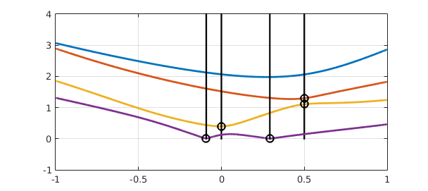
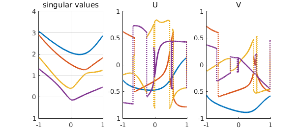
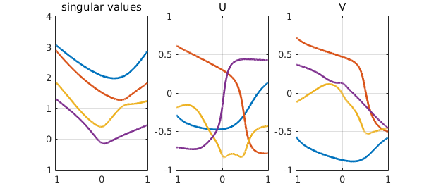
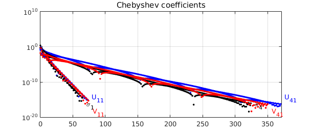

function AnalyticSVD()
tic
1. The analytic SVD
Nearly everybody knows the matrix SVD $$ A=USV^T, $$ where $U,V$ are orthogonal and $S$ is diagonal with nonnegative nonincreasing elements. A less known generalization is the analytic SVD: Let $A(t)$ be a matrix whose elements are analytic functions of a parameter $t$ belonging to a real interval (for example, $t \in [-1,1]$). Then, there exists an analytic singular value decomposition [1,2] $$ A(t)=U(t)S(t)V(t)^T, $$ in which each matrix on the right-hand side is analytic for every $t \in [-1,1]$. Moreover, $U(t)$ and $V(t)$ are unitary for all $t \in [-1,1]$, while $S(t)$ is a diagonal matrix whose entries are real analytic functions of $t$, although not necessarily positive or ordered (these relaxations are necessary to achieve analyticity)
2. A non-smooth SVD
Let's try to use Chebfun to explore the analytic SVD. We define a $4\times 4$ matrix $A(t)$ depending affinely on $t$:
clear, close all LW = 'linewidth'; MS = 'markersize'; FS = 'fontsize'; lw = 2; fs = 14; ms = 10; CO = 'color'; VEC = 'vectorize'; SP = 'splitting'; m = 4; n = 4; rng(10); A = randn(m,n); B = randn(m,n); AA = @(t) A*t + B*(1-t);
Next, we use Chebfun to resolve the analytic SVD as a function. We expect the initial outcome to be likely to have many singularities, for reasons to be clarified below, and for this reason we use 'splitting on': We now create a function UVSVD that, given a matrix $A$, outputs one of the scalar elements of the SVD (see the listing at the end). Chebfun with the flag 'splitting on' will introduce break points, which we highlight in the plot. The black vertical lines indicate the x-values of the break points, with the black circles showing the location of the particular singular value that requires splitting.
for ii = 1:n
f = chebfun(@(t) UVSVD(AA(t),ii),SP,'on',VEC);
plot(f,LW,lw), hold on, grid on
b = f.domain(2:end-1); k = length(b);
for j = 1:k, x = b(j); plot(x*[1 1],[0 4],'k'), plot(x,f(x),'ko'),end
end

Now let's also look at the singular vectors.
for pos = 1:n
uu = chebfun(@(t)UVSVD(AA(t),1,pos,1),SP,'on',VEC);
ss = chebfun(@(t)UVSVD(AA(t),pos,pos,2),SP,'on',VEC);
vv = chebfun(@(t)UVSVD(AA(t),1,pos,3),SP,'on',VEC);
subplot(1,3,1), hold on, grid on
plot(ss,LW,lw), title('singular values')
subplot(1,3,2), hold on
plot(uu,LW,lw), title('U')
subplot(1,3,3), hold on
plot(vv,LW,lw), title('V')
% store chebfuns for later use
uupos{pos} = uu; sspos{pos} = ss; vvpos{pos} = vv;
end

At the moment neither the singular values nor the singular vectors look like analytic functions. One reason is that the theory prescribes the singular values of an analytic SVD to be possibly negative: otherwise, points of nondifferentiability may occur.
3. Making the singular values smooth
To cure this, we look at the breakpoints of the singular values' chebfuns, and we flip the signs of every other segment if they do correspond to a discontinuity in the derivative. Moreover, precisely one of the two singular vectors corresponding to a nondifferentiable singular value must be affected by a discontinuity. Hence, we flip the sign of the corresponding chebfun accordingly.
clf
for pos = 1:n
uu = uupos{pos}; vv = vvpos{pos}; ss = sspos{pos};
endsss = ss.ends(2:end-1);
endsuu = uu.ends(2:end-1);
endsvv = vv.ends(2:end-1);
ssp = diff(ss); %derivative of singular values
spleft = ssp(endsss,'left'); %left-derivatives at breakpoints
spright = ssp(endsss,'right'); %right-derivatives at breakpoints
sdisc = find(abs(spleft-spright)>1e-8); %non-smooth break points
uleft = uu(endsss(sdisc),'left');
uright = uu(endsss(sdisc),'right');
for ii = 1:length(sdisc)
ss = chebfun(@(t)ss(t).*sign(endsss(sdisc(ii))-t),SP,'on',VEC);
if abs(uleft-uright)>1e-8
uu = chebfun(@(t)uu(t).*sign(endsss(sdisc(ii))-t),SP,'on',VEC);
else
vv = chebfun(@(t)vv(t).*sign(endsss(sdisc(ii))-t),SP,'on',VEC);
end
end
subplot(1,3,1), hold on, grid on
plot(ss,LW,lw), title('singular values')
subplot(1,3,2), hold on
plot(uu,LW,lw), title('U')
subplot(1,3,3), hold on
plot(vv,LW,lw), title('V')
uupos{pos} = uu; sspos{pos} = ss; vvpos{pos} = vv;
end

4. Making the singular vectors smooth
After this treatment, the singular values now do look nice and smooth. This is not the case for the singular vectors yet. Why? This time, the explanation is not mathematical, but computational: MATLAB's svd makes some arbitrary choices on the signs of the singular vectors that might not fit well with the analytic SVD. Again, this is easily remedied by looking at breakpoints in the singular vectors' chebfuns, and by flipping the sign every other segment; this resembles the unwrap command for obtaining continuous arguments for complex numbers; see http://www.chebfun.org/examples/complex/Arguments.html
clf
for pos = 1:n
uu = uupos{pos}; vv = vvpos{pos}; ss = sspos{pos};
endsuu = uu.ends(2:end-1);
uleft = uu(endsuu,'left');
uright = uu(endsuu,'right');
jumps = find(abs(uleft-uright)>1e-8);
for ii = 1:length(jumps)
uu = chebfun(@(t)uu(t).*sign(endsuu(jumps(ii))-t),SP,'on',VEC);
vv = chebfun(@(t)vv(t).*sign(endsuu(jumps(ii))-t),SP,'on',VEC);
end
subplot(1,3,1)
plot(ss,LW,lw), hold on, grid on, title('singular values')
subplot(1,3,2)
plot(uu,LW,lw), hold on, grid on, title('U')
subplot(1,3,3)
plot(vv,LW,lw), hold on, grid on, title('V')
uupos{pos} = uu; vvpos{pos} = vv; sspos{pos} = ss;
end

5. Eliminating the unnecessary breakpoints
Now these functions are supposed to be analytic across the interval $[-1,1]$. We form a global chebfun to confirm this. We show the plots for the first and last singular values; the others look similar.
clf
for pos = [1 n]
uu = uupos{pos}; uu = chebfun(@(t)uu(t));
ss = sspos{pos}; ss = chebfun(@(t)ss(t));
vv = vvpos{pos}; vv = chebfun(@(t)vv(t));
plotcoeffs(uu,'bo',LW,lw), hold on
plotcoeffs(ss,'ko',LW,lw)
plotcoeffs(vv,'ro',LW,lw)
text(length(uu)+5,eps*10,['U_{',num2str(pos),'1}'],CO,'b',FS,fs)
text(length(ss)+5,eps/10,['\sigma_',num2str(pos)],CO,'k',FS,fs)
text(length(vv)+5,eps/1e3,['V_{',num2str(pos),'1}'],CO,'r',FS,fs)
end

And we are finally happy! Nonetheless, one should not assume that computing an analytic SVD is always this simple: we have avoided the difficult case where multiple singular values are present, in which case the singular vectors need to be chosen very carefully. Nearly-multiple singular values can be equally challenging to deal with numerically. See [1] for an algorithm that addresses these issues, which still seems to be a state-of-the-art reference on computing an analytic SVD.
Unfortunately, these computations are not very fast:
time_in_seconds = toc
time_in_seconds =
2.532178730000000e+02
References
[1] A. Bunse-Gerstner, R. Byers, V. Mehrmann and N. Nichols, Numerical computation of an analytic singular value decomposition of a matrix valued function, Numerische Mathematik (1991), 60(1), 1--39.
[2] T. Kato, Perturbation Theory for Linear Operators, Springer, 1995.
end
function y = UVSVD(A,i,j,pos)
% (ij) element of U(if pos=1), S(if pos=2) , V(if pos=3)
if nargin==1
i = 1; j = 1;
end
if nargin<4
pos = 2;
end
[U,S,V] = svd(A,0);
if pos == 1
y = U(i,j);
elseif pos == 2
y = S(i,i);
else
y = V(i,j);
end
end